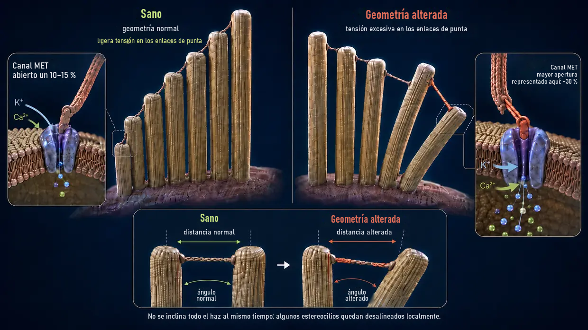
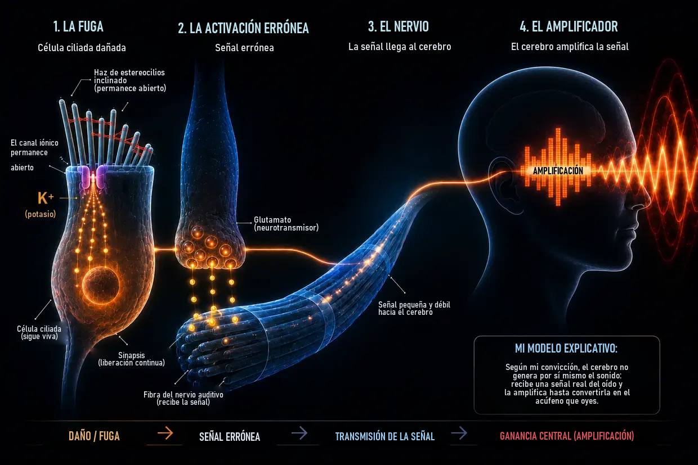

Acúfenos por ruido: cuando el oído llega al límite
Última actualización: junio de 2026
Esta es mi propia explicación, basada en años de investigación y en mis propios acúfenos, que superé por completo en dos ocasiones; no es el estándar médico.
Yo también padecí entonces esta enfermedad extrema, como ya había contado en mi biografía.
Estaba tan desesperado que me había jurado: o se van los acúfenos o me voy yo. (Por supuesto, no lo decía tan en serio, pero de verdad estaba sometido a una presión inmensa.)
Lo que viví entonces fue, sobre todo, un tono fuerte, estridente y de alta frecuencia en el oído izquierdo, acompañado de un ruido mucho más al fondo. Era lo peor que en aquel momento podía imaginar; y, para colmo, poco después empeoró claramente el tono débil que ya había aparecido en el oído derecho el tercer día, como consecuencia directa de unas indicaciones médicas que, en mi caso personal, resultaron ser del todo equivocadas.
En esencia, esas «indicaciones» consistían en tapar el tono con otros sonidos, por ejemplo, con música por auriculares a mayor volumen o con un ruido continuo. Pero en realidad eso significaba exponer mis oídos a todavía más estímulos sonoros, aunque ya estaban sometidos a una sobrecarga enorme. Visto en retrospectiva, fue uno de mis mayores errores, porque precisamente eso empeoró mi estado y agravó claramente el tono débil que ya había en el oído derecho.
El ruido era como un ataque permanente contra mis nervios, mi sueño y toda mi vida. Los médicos me decían que tenía que aprender a vivir con él. En internet encontré terapias que se contradecían entre sí. Para mí, todo sonaba a desconcierto.
Así que me juré: esto no podía ser todo. Empecé a investigar como un obseso, a leer estudios, comparar testimonios y formarme mi propia idea. Poco a poco surgió un mecanismo claro, una imagen que para mí tenía lógica y que más tarde también se confirmó en mis propias experiencias.
Hoy puedo decirlo: los acúfenos por ruido no son un misterio. Son el resultado de que el oído se haya sobrecargado; y cuando entiendes qué ocurre, también entiendes por qué está ahí el ruido y qué puedes hacer tú mismo.
Resumen Léelo en 60 segundos: lo más importante de un vistazo
Con un volumen extremo (por ejemplo, en una discoteca), las bombas sencillamente ya no dan abasto. El consumo de energía (ATP) se dispara, la célula ya no puede reponerla y pasa a un modo de emergencia poco limpio que produce ácido láctico y acidifica el entorno celular: una espiral descendente parecida al fallo muscular durante un esprint. Cuando las bombas dejan de dar abasto, el calcio se acumula dentro de los diminutos estereocilios. Ese exceso de calcio activa enzimas degradantes (calpaínas) que devoran el «pegamento» —las proteínas entrecruzadoras de actina— situado entre los filamentos estructurales internos del estereocilio. Sin ese pegamento, el estereocilio pierde rigidez y se deforma. Como consecuencia, el canal iónico de la punta queda permanentemente demasiado abierto, como una ventana que se ha quedado entreabierta. Por esta fuga permanente entra potasio sin cesar, lo que mantiene toda la célula bajo tensión eléctrica continua. Esta tensión abre otros canales en la propia célula ciliada interna; por ellos, el calcio gotea hacia la sinapsis y provoca allí una liberación ininterrumpida de glutamato hacia el nervio coclear. El cerebro recibe esta señal errónea, tenue pero constante, detecta que falta la entrada normal en ese intervalo de frecuencias y sube muchísimo su preamplificador interno, la ganancia central. Solo mediante esta amplificación la sutil señal errónea se convierte en el tono que percibimos conscientemente: el acúfeno.
La buena noticia: mientras la célula siga viva, conserva el plano y la capacidad de reparar. Para ello necesita energía, materiales y descanso.
Qué ocurre realmente en el oído: el proceso fisiológico normal de la audición
Antes de entrar en materia, una breve aclaración para que nos entendamos bien a lo largo de todo el texto: en el oído interno se encuentran las llamadas células ciliadas, las verdaderas células sensoriales de la audición. En la superficie de cada célula ciliada hay un haz de diminutas prolongaciones parecidas a dedos: los estereocilios. Según la posición de la célula ciliada en la cóclea, hay entre unos 50 y 300, dispuestos en filas de menor a mayor como los tubos de un órgano. Cada estereocilio tiene su propio armazón interno de proteínas de actina. Tanto en la vida cotidiana como en la investigación, a menudo se llama simplemente «pelitos» o «pelitos sensoriales» a estos estereocilios, y así uso también el término en esta página. Lo importante es esto: cuando hablo de «pelitos», siempre me refiero a los estereocilios situados sobre la célula ciliada, no a la propia célula ciliada.
Normalmente, la audición funciona como una reacción en cadena de gran precisión:
El impulso: un estímulo sonoro alcanza los finos «pelitos» —los estereocilios— de las células ciliadas y los dobla hacia un lado.
La tracción mecánica (enlaces de punta): como las puntas de estos estereocilios están unidas entre sí por filamentos proteicos extremadamente finos —los enlaces de punta o tip links—, al doblarse se genera tensión. Estos filamentos funcionan como un cable mecánico: tiran físicamente del canal iónico situado en la punta y lo abren, como cuando tiras del tapón de una bañera.
La entrada: como el oído interno está lleno de un líquido rico en potasio, por el canal que acaba de abrirse entra de inmediato potasio (K+) en el estereocilio, y también pequeñas cantidades de calcio.
La activación: esta entrada de potasio modifica la tensión eléctrica de la célula ciliada —despolarización—. Eso abre de forma secundaria canales de calcio situados más abajo en la propia célula ciliada: no están en los estereocilios, sino en el cuerpo celular que hay debajo.
La señal: solo entonces el calcio que entra provoca la liberación de los neurotransmisores que envían la señal al cerebro a través del nervio coclear.
El reinicio: después, unos transportadores especializados —tanto en los estereocilios como en el cuerpo de la célula ciliada— vuelven a bombear hacia fuera el exceso de potasio y calcio con ayuda del ATP —la energía celular—, de modo que la célula puede calmarse.
Este sistema está diseñado para que haya continuamente un pequeño «abrir y cerrar», como un ritmo respiratorio. Lo decisivo es que, en reposo, el canal de la punta del estereocilio no está cerrado por completo, sino siempre un poco abierto; esto es normal y necesario para que la célula pueda reaccionar de inmediato incluso al sonido más leve. Mientras el estereocilio se mantenga recto, esa apertura permanece mínima y controlada. Pero si queda inclinado hacia un lado de forma permanente, el canal permanece demasiado abierto; y ahí empieza el problema.
Antes de ver qué ocurre cuando este sistema se sobrecarga, una idea importante: cuando aparecen acúfenos crónicos después de un trauma acústico, muchas personas afectadas piensan —y muchos médicos también transmiten esa impresión— que las células ciliadas del oído han quedado destruidas de forma irreversible y que ahora el cerebro produce el tono por sí solo, a partir del recuerdo. En mi opinión, esa explicación se queda corta. Una célula ciliada muerta ya no envía ninguna señal: está muda. Precisamente porque el tono ESTÁ ahí, la célula todavía tiene que estar viva. El acúfeno no es la señal de una célula muerta, sino la de una célula que lucha por sobrevivir. Es perfectamente posible que un daño por ruido también destruya definitivamente algunas células ciliadas, pero, según mi interpretación, esas células no intervienen en los acúfenos porque ya no envían ninguna señal. El tono procede de las células que siguen ahí y luchan, y que han quedado atrapadas en un estado de pérdida funcional causada por falta de energía.
Lo que sigue es una explicación detallada y paso a paso de esta pérdida funcional. Si prefieres una versión más breve, más arriba encontrarás un resumen.
Cuando el ruido se vuelve demasiado intenso (qué ocurre al ir a una discoteca)
Pero si llega demasiado sonido de golpe o de forma continua —crónica—, el equilibrio se rompe y la mecánica falla. No todas las visitas a una discoteca provocan esto; pero, cuando aparecen acúfenos por ruido, estoy convencido de que este es el mecanismo que hay detrás: una cascada de pérdida de energía, colapso mecánico e inundación química, tres procesos que se alimentan entre sí y desembocan en un círculo vicioso.
- 01Colapso energético
- 02Colapso mecánico
- 03Rescate de emergencia y rueda de hámster
Etapa 1: el colapso energético
Recordemos el proceso normal de audición: con cada estímulo sonoro entran iones en la célula y después hay que volver a bombearlos hacia fuera, consumiendo ATP. Con un volumen normal, el ritmo es tranquilo: la célula bombea sin prisas y dispone de energía de sobra. Pero a 100 decibelios en una discoteca, las ondas sonoras golpean los estereocilios sin cesar y con una fuerza brutal. Los canales se abren de golpe, entran iones en masa y las bombas sencillamente ya no dan abasto. El consumo de energía se dispara.
Las células ciliadas consumen ahora mucha más energía de la que pueden reponer. Las centrales energéticas normales de la célula —las mitocondrias— trabajan al límite. Para poder satisfacer de algún modo esa enorme demanda de energía, la célula recurre a una vía de emergencia más rápida, pero poco limpia: la glucólisis anaerobia. Este modo de emergencia proporciona energía de inmediato, pero genera como residuo ácido láctico —lactato—, que acidifica el entorno celular. Debido a esa acidez, las enzimas encargadas de producir energía funcionan cada vez peor: una espiral descendente.
La comparación con el deporte: todo el mundo conoce esta sensación al levantar pesas o esprintar. Al cabo de un tiempo, el músculo empieza a «arder» —aumenta el lactato— y llega un momento en que sencillamente deja de responder: el clásico fallo muscular. En el oído interno ocurre exactamente el mismo fallo químico, con la diferencia de que no se siente como dolor, sino como una pérdida funcional.
Y justo aquí acecha el verdadero peligro: cuando las bombas dejan de dar abasto, el calcio se acumula dentro de los estereocilios. En pequeñas cantidades, este calcio es normal y necesario; pero, si sobra, se convierte en un destructor. La etapa 2 muestra qué destruye y por qué resulta tan grave.
Etapa 2: el colapso mecánico
Para entender el daño que causa ahora el calcio, primero hay que saber brevemente cómo está construido un estereocilio por dentro: contiene cientos de filamentos de actina paralelos, que puedes imaginar como un haz de espaguetis crudos. Estos filamentos están pegados entre sí mediante unos puentes proteicos cortos, las llamadas proteínas entrecruzadoras de actina. Estas proteínas son las verdaderas responsables de la estabilidad estructural del estereocilio: mantienen el haz de filamentos de actina tan firmemente unido que se sostiene rígido como un tubo de acero, por sí solo y sin consumir energía. Mientras las proteínas entrecruzadoras de actina permanezcan intactas, el estereocilio se mantiene erguido.
Debido a la pérdida de energía de la etapa 1, ahora se pone en marcha una reacción en cadena fatal:
Las bombas quedan desbordadas —inundación de calcio—: como vimos en el proceso normal de audición, junto con el potasio siempre entra también una pequeña cantidad de calcio en el estereocilio. En condiciones normales no supone ningún problema: en la propia membrana del estereocilio hay bombas de calcio que vuelven a expulsarlo de inmediato. Pero estas bombas también necesitan ATP. Y durante la sobrecarga aguda de la discoteca, la energía ya no alcanza ni de lejos: las bombas quedan literalmente desbordadas. La consecuencia es que incluso las pequeñas cantidades de calcio que normalmente no causarían ningún problema se acumulan dentro del estereocilio; y es precisamente esta concentración excesiva la que desencadena el verdadero colapso estructural.
Y ahora llega el verdadero colapso estructural: el calcio acumulado activa unas enzimas degradantes especiales, las llamadas calpaínas. Estas enzimas devoran precisamente las proteínas entrecruzadoras de actina que acabamos de conocer: el mortero que mantiene unido el haz de filamentos de actina.
Una imagen sencilla ayuda a entender por qué esto resulta tan devastador:
Toma un solo espagueti crudo: puedes doblarlo y romperlo con facilidad. Ahora toma cien espaguetis y pégalos con pegamento instantáneo hasta formar una barra compacta: de repente tienes un tubo rígido que apenas se deja doblar. Cada filamento por separado es débil, pero pegados son fuertes.
Así funciona el estereocilio: como espaguetis pegados con pegamento instantáneo. No son los filamentos de actina por sí solos los que le dan rigidez, sino su unión mediante las proteínas entrecruzadoras de actina.
Cuando las calpaínas devoran ese pegamento, ocurre lo contrario: el tubo rígido vuelve a convertirse en filamentos sueltos e individuales. Los filamentos de actina siguen dentro del estereocilio, siguen ahí, pero sin las uniones que hay entre ellos ya no se mantienen juntos. El estereocilio pierde rigidez, no porque se haya roto algo, sino porque le falta la cohesión interna.
Si la persona permanece en la discoteca, a menudo la situación empeora todavía más: los filamentos individuales, ahora desprotegidos y separados, pueden llegar a romperse en sus puntos débiles bajo la presión sonora continua, como espaguetis sueltos que se quiebran bajo carga sin el apoyo de los que tienen al lado. Y cuando se rompe un filamento, aumenta la carga sobre los filamentos vecinos, que a su vez pueden romperse: existe el riesgo de un efecto en cascada.
El resultado: sin su soporte interno, el estereocilio ya no puede mantener la posición erguida y se deforma. Para imaginar lo que eso significa, ayuda esta imagen: los estereocilios se disponen uno al lado de otro en filas, con distintas alturas, y sus puntas están unidas entre sí por finos enlaces de punta. En condiciones sanas, todos los estereocilios están perfectamente rectos; los enlaces que hay entre ellos tienen exactamente la tensión adecuada y, en reposo, el canal solo está mínimamente abierto. Cuando llega una onda sonora, los estereocilios se inclinan brevemente hacia un lado, los enlaces se tensan y el canal se abre; en cuanto pasa la onda, vuelven a su posición y todo se relaja. Un abrir y cerrar limpio.
Ahora imagina que esos mismos estereocilios ya no están rectos, sino que quedan inclinados, incluso SIN que llegue ninguna onda. Los enlaces entre ellos están sometidos permanentemente a una tensión distinta de la prevista. Al mismo tiempo, la membrana también está deformada. Por eso, el canal ya queda demasiado abierto incluso en reposo. A partir de ese momento entran potasio y calcio en la célula de manera permanente y descontrolada, aunque hace tiempo que la música ha dejado de sonar. Se ha formado una fuga permanente y, con ella, la base de los acúfenos. La célula ciliada interna envía una señal aunque no haya sonido, porque la geometría ya no es la correcta.

En la mayoría de las personas afectadas, los acúfenos empiezan relativamente pronto después del ruido, entre unos minutos y unas pocas horas. Sin embargo, también hay casos en los que no aparecen hasta horas o incluso días más tarde. En la sección de preguntas frecuentes explico con detalle por qué puede variar tanto y qué papel desempeñan determinadas estructuras del oído.
Etapa 3: el rescate de emergencia y por qué no basta
La célula detecta el daño y activa de inmediato un mecanismo de supervivencia: unas proteínas reparadoras especiales, como XIRP2, que ya están almacenadas como reserva de emergencia en el cuerpo celular, corren hacia las zonas dañadas. Si se han roto filamentos, se enrollan alrededor de las roturas —los espaguetis de la etapa 2— como una cinta adhesiva molecular ultrarresistente e impiden que se partan por completo y que la cascada se descontrole. Esta es la fase 1: la estabilización aguda de emergencia. El proceso es rápido —de minutos a horas— porque XIRP2 no tiene que fabricarse primero: solo se recluta hacia la zona dañada. El estereocilio sobrevive, pero el armazón sigue blando e inestable, porque XIRP2 no puede sustituir las proteínas entrecruzadoras de actina que faltan entre los filamentos.
Ahora tendría que ponerse en marcha obligatoriamente la fase 2 —la remodelación activa—, que comprende dos frentes a la vez. Primero, los parches de XIRP2 tendrían que sustituirse por actina nueva e intacta. Segundo, habría que sintetizar nuevas proteínas entrecruzadoras de actina e insertarlas entre los filamentos para volver a pegar el haz de filamentos de actina y formar una barra firme. Ambas tareas consumen muchísimo ATP y necesitan material procedente del cuerpo celular; además, los estereocilios no tienen centrales energéticas propias —mitocondrias— y dependen por completo de la energía que llega desde abajo, desde el cuerpo de la célula ciliada. Pero es justo aquí donde se cierra la trampa crónica para la mayoría de los adultos. El siguiente capítulo explica por qué.
-
01Colapso energético
El consumo de ATP se dispara y la célula pasa al modo de emergencia. El ácido láctico se acumula y el entorno celular se acidifica.
-
02Colapso mecánico
El exceso de calcio devora el «pegamento» entre los filamentos de actina del estereocilio. El estereocilio se deforma y aparece la fuga.
-
03Rescate de emergencia y rueda de hámster
XIRP2 estabiliza las roturas. La célula sobrevive a la fase aguda, pero falta energía para la reparación propiamente dicha.
La trampa de la rueda de hámster: por qué la reparación no llega nunca
Ahora llega la transición decisiva entre el episodio agudo y el problema crónico.
En cuanto cesa el ruido, comienza la recuperación: la célula empieza de inmediato a volver a producir ATP y las bombas regresan poco a poco a su funcionamiento normal. El conjunto de la regeneración —reducción de la acidez, medidas de reparación y reposición de las reservas energéticas— se produce después, sobre todo con el paso del tiempo y especialmente durante el sueño. Es decir, el cuerpo empieza a limpiar: la inundación de iones acumulada en la fase aguda —tanto por la enorme carga de la discoteca como por la fuga que ya se había formado— se expulsa gradualmente. El pico extremo de iones se normaliza en gran medida y, con ello, el nivel de calcio cae por debajo del umbral crítico: las enzimas degradantes —las calpaínas— quedan inactivas y cesa el daño estructural activo.
Pero entonces, ¿por qué el oído no sana a pesar de todo?
Porque la fuga permanente sigue ahí. Los estereocilios continúan inclinados, el canal iónico permanece demasiado abierto y las bombas tienen que expulsar ese exceso las veinticuatro horas. La siguiente imagen ayuda a entender por qué precisamente eso impide la reparación:
El principio del tejado, la casa y el sótano
Para entender este dilema de un vistazo, imagina la célula ciliada como un edificio alimentado por un único contador eléctrico —el ATP—:
El tejado: los finos estereocilios, con su armazón de actina debilitado, están atrapados en el modo de emergencia de la fase 1. Aquí arriba está la fuga y aquí es donde debería trabajar el equipo de construcción. Pero, en lugar de eso, las propias bombas del tejado están ocupadas expulsando sin cesar el potasio que entra y, sobre todo, el peligroso calcio; porque, si aquí arriba el calcio vuelve a superar el umbral crítico, las enzimas degradantes podrían reactivarse y agravar el daño.
La casa: el gran cuerpo celular propiamente dicho y el ÚNICO lugar donde se encuentran las centrales energéticas —las mitocondrias— que producen el ATP para todas las partes de la célula. Por el tejado roto entran ahora iones sobrantes sin interrupción.
El sótano: aquí abajo también hay bombas iónicas que tienen que sacar desesperadamente el calcio filtrado, a contracorriente, para que la casa no se inunde por completo y la célula no muera.
Como las bombas del tejado y las del sótano consumen la mayor parte de la energía disponible solo para evitar que el edificio se hunda bajo el agua, a la célula ya no le quedan recursos para enviar a los obreros y reparar el daño del armazón de actina. La reparación se pospone sin límite. La fuga sigue abierta. Las bombas trabajan sin descanso. La rueda de hámster sigue girando.
De la lucha por sobrevivir al tono: así surgen los acúfenos

Ya sabemos que la fuga permanente sigue ahí y que la célula está atrapada en la rueda de hámster. Pero ¿cómo se convierte eso en un tono audible? El potasio que entra sin cesar mantiene toda la célula ciliada interna bajo tensión eléctrica permanente —despolarizada—: nunca vuelve a su potencial de reposo. A su vez, esta tensión continua abre canales de calcio dependientes del voltaje situados más abajo en la célula ciliada interna, por los que ahora gotea constantemente algo de calcio hacia la sinapsis. Ese calcio provoca una liberación ligera e ininterrumpida del neurotransmisor glutamato hacia el nervio coclear. El cerebro recibe una señal permanente de «¡FUEGO!», aunque no haya ningún sonido, y traduce ese cortocircuito químico en un ruido.
Qué hace el cerebro con esa señal: el amplificador, no la causa
Aquí entra en escena el cerebro. La medicina convencional afirma a menudo que el cerebro ha «aprendido» los acúfenos y que ahora produce el tono de forma totalmente autónoma. En mi opinión, esa explicación está incompleta. El cerebro no crea los acúfenos de la nada. Como procesador extremadamente complejo, reacciona al flujo constante y erróneo de glutamato que se escapa desde el oído.
Como el daño por ruido y los estereocilios inclinados hacen que falten las señales externas reales y limpias —las frecuencias normales—, el centro auditivo del cerebro entra en una especie de privación sensorial. El cerebro responde sin contemplaciones mediante un mecanismo de protección evolutivo: sube muchísimo el preamplificador precisamente para esas frecuencias ausentes, la llamada «ganancia central». En la naturaleza, esto era vital para poder oír los pasos de un depredador que se acercaba sigilosamente a pesar de tener el oído dañado. El cerebro toma, por tanto, el flujo de fuga de las células ciliadas dañadas —en realidad tenue— y lo hace pasar por un ecualizador gigantesco. Amplifica la señal hasta convertirla en la sirena ensordecedora que percibimos conscientemente como acúfeno.
La trampa fatal del enmascaramiento: por qué las aplicaciones de ruido son lo peor que se puede hacer
El enmascaramiento quema la única ventana de reparación que aún le queda a tu oído.
Aquí está, según mi experiencia, el error más grave que cometen las personas afectadas siguiendo el consejo de un médico. La recomendación clásica es: «Tape el tono con ruido blanco, sonidos de la naturaleza o música suave». Parece lógico a primera vista y, de hecho, alivia a corto plazo. Pero, según mi interpretación, es desastroso desde el punto de vista bioquímico.
Hay que tener claro que los estereocilios siguen vivos y activos, pero están inclinados. En realidad, la célula intenta aprovechar cada fase de reposo —sobre todo durante el sueño— para reparar la estructura con la poca energía que le queda y volver a erguirse.
Pero si mantienes los oídos sometidos de forma artificial a más sonido, obligas a los estereocilios dañados a volver al modo de trabajo. Tienen que reaccionar otra vez al sonido, bombear iones y consumir precisamente la energía que habían reservado para la fase 2, la verdadera reparación. Y hay un segundo problema: cada onda sonora hace que, dentro del haz de filamentos de actina dañado, los filamentos se deslicen unos contra otros. Debido a ese movimiento continuo, las proteínas entrecruzadoras de actina recién insertadas vuelven a desprenderse antes de poder fijarse bien, como un peldaño que intentas colocar en una escalera mientras alguien la sacude.
En la imagen del tejado, la casa y el sótano, la exposición artificial al sonido azota mecánicamente el tejado, que ya está blando. La fuga sigue demasiado abierta. Las bombas del sótano tienen que funcionar al límite absoluto las veinticuatro horas del día. Para los obreros de arriba, en el tejado, no queda nada de energía.
Esto explica un fenómeno que yo mismo viví y del que hablan incontables personas afectadas: por la noche tapas los acúfenos con ruido y te sientes mejor a corto plazo, pero a la mañana siguiente están más agresivos y más fuertes que la noche anterior. La razón es que la célula ha gastado su turno de noche —su única ventana de reparación— procesando el sonido artificial.
Quiero decir algo con total sinceridad: entiendo perfectamente por qué algunas personas pueden vivir bien con el enmascaramiento. Si los acúfenos arrastran a alguien al abismo psicológico y hacen imposible dormir, taparlos a corto plazo puede ser literalmente una medida que le salve la vida; y no quiero quitarle esa opción a nadie que se encuentre así. Pero, para la regeneración propiamente dicha —es decir, para que los acúfenos realmente vuelvan a desaparecer—, el enmascaramiento es contraproducente según mi interpretación. Esa es la diferencia que quiero señalar.
La esperanza: por qué es posible reparar
A pesar de todos estos mecanismos, hay un rayo de esperanza decisivo: como el núcleo celular está intacto y el armazón de actina sigue existiendo en lo esencial, la célula puede reparar la estructura. Los estereocilios tienen un recambio activo de actina: sus filamentos de actina se desmontan y vuelven a construirse continuamente. La célula renueva así su propia estructura sin cesar. En concreto, la fase 2 significa que los parches de XIRP2 en las roturas de los filamentos se sustituyen por actina nueva y que se insertan nuevas proteínas entrecruzadoras de actina entre los filamentos hasta que el haz de filamentos de actina vuelve a quedar firme y rígido. La cuestión no es si la célula puede reparar, sino si, en esas condiciones, dispone de suficiente energía y materiales, y si se le da el descanso que necesita.
Incluso si el armazón interno de soporte hubiera sufrido un colapso grave, no sería un veredicto definitivo. Mientras la célula siga viva, conserva el plano y la capacidad de reconstruir ese armazón en cuanto vuelva a haber suficiente energía —ATP— y materiales y se detenga el estrés químico.
Resulta interesante que la investigación farmacéutica también persiga exactamente este principio —aumentar la energía celular, el ATP—, lo que respalda mi modelo explicativo, aunque, hasta ahora, el efecto sobre el ATP y las especies reactivas de oxígeno (ERO) solo se ha mostrado en cultivos celulares. El fármaco AC102 se dirige precisamente a este mecanismo: en un modelo animal —un jerbo—, un patrón de conducta típico de los acúfenos retrocedió casi por completo a lo largo de cinco semanas después de una sola dosis de AC102 —al final, solo 1 de 15 animales seguía afectado, frente a una gran parte del grupo placebo—, medido mediante el reflejo de sobresalto —GPIAS—, un correlato conductual reconocido de los acúfenos. Actualmente está en marcha un ensayo clínico de fase 2 en seres humanos cuyos resultados se esperan para 2026 (Estado de la investigación sobre AC102 en mi página de fuentes →). La terapia con láser de baja intensidad —fotobiomodulación— también se basa en este enfoque energético fundamental.
La conclusión
Esto es lo que, en mi opinión, son realmente los acúfenos crónicos por ruido desde el punto de vista fisiológico: una célula viva atrapada en un modo energético de emergencia, cuya reparación ha quedado congelada en gran medida en la fase 1 porque falta la energía para la fase 2. El oído no está «roto» y el cerebro no se inventa una señal fantasma. El tono es el resultado de una lucha periférica real por sobrevivir que el cerebro se limita a amplificar.
Que el tono permanezca depende únicamente de si se ayuda a las células a cerrar la fuga y se vuelve a suministrar energía a las bombas para que el estereocilio pueda erguirse de nuevo.
Entonces, ¿qué hacer ante los acúfenos por ruido?
Aunque los mecanismos son complejos, hay tres palancas fundamentales que conviene entender de inmediato. En mi página sobre mi enfoque explico con detalle en qué consisten y cómo me ayudaron entonces, en dos ocasiones, a librarme de los acúfenos hasta que desaparecieron por completo.
En la página siguiente explico en qué consisten esas tres palancas y cómo me ayudaron entonces.
Toda la historia en una sola cadena
Según mi modelo explicativo, lo que ocurre en un trauma acústico se puede resumir en una cadena continua:
Con un volumen extremo (por ejemplo, en una discoteca), las bombas sencillamente ya no dan abasto. El consumo de energía (ATP) se dispara, la célula ya no puede reponerla y pasa a un modo de emergencia poco limpio que produce ácido láctico y acidifica el entorno celular: una espiral descendente parecida al fallo muscular durante un esprint. Cuando las bombas dejan de dar abasto, el calcio se acumula dentro de los diminutos estereocilios. Ese exceso de calcio activa enzimas degradantes (calpaínas) que devoran el «pegamento» —las proteínas entrecruzadoras de actina— situado entre los filamentos estructurales internos del estereocilio. Sin ese pegamento, el estereocilio pierde rigidez y se deforma. Como consecuencia, el canal iónico de la punta queda permanentemente demasiado abierto, como una ventana que se ha quedado entreabierta. Por esta fuga permanente entra potasio sin cesar, lo que mantiene toda la célula bajo tensión eléctrica continua. Esta tensión abre otros canales en la propia célula ciliada interna; por ellos, el calcio gotea hacia la sinapsis y provoca allí una liberación ininterrumpida de glutamato hacia el nervio coclear. El cerebro recibe esta señal errónea, tenue pero constante, detecta que falta la entrada normal en ese intervalo de frecuencias y sube muchísimo su preamplificador interno, la ganancia central. Solo mediante esta amplificación la sutil señal errónea se convierte en el tono que percibimos conscientemente: el acúfeno.
Lo trágico es que, después de la discoteca, la energía se recupera en parte, pero las bombas consumen casi toda esa energía solo para controlar la fuga permanente y mantener viva la célula. No queda nada para la verdadera reparación: fabricar nuevas proteínas entrecruzadoras de actina y volver a levantar el armazón. La célula queda atrapada en la rueda de hámster. Que los acúfenos sean temporales o se vuelvan crónicos depende de cuánto pegamento se haya destruido —poco: reparable; mucho: rueda de hámster—, de si se deja descansar el oído o se lo sigue exponiendo al sonido —según mi experiencia, enmascararlos con ruido empeora la situación— y de si el cuerpo recibe suficiente energía y materiales. La buena noticia es que, mientras la célula siga viva, conserva el plano y la capacidad de reparar: necesita energía, materiales y descanso.
Preguntas adicionales y preguntas frecuentes
Para quien quiera profundizar, en la sección de preguntas frecuentes hay más temas interesantes relacionados con los acúfenos por ruido: por qué puede variar su intensidad, por qué se vuelven más tenues durante un breve periodo cuando se tapan y por qué poco después vuelven a sonar más fuertes. Allí se explican de forma comprensible estos fenómenos cotidianos a partir de los mismos mecanismos fisiológicos descritos aquí.
Aviso importante
Si tienes acúfenos o problemas de audición, especialmente si han aparecido de forma repentina, acude a un otorrinolaringólogo para que descarte causas orgánicas. Los contenidos, modelos explicativos y enfoques que comparto en esta web no son asesoramiento médico, sino mi experiencia personal y mi propia investigación. Cada cuerpo es distinto. No soy médico ni prometo curaciones. Aplicar los enfoques descritos aquí es responsabilidad de cada persona.